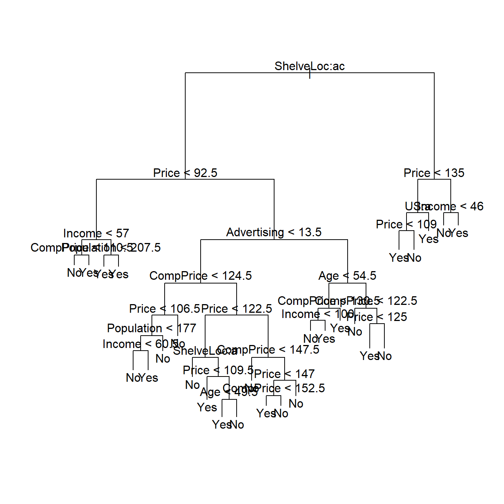

8.1 Árboles de decisión

Los árboles de decisión particionan el espacio en un conjunto de rectángulos y ajustan un modelo simple (como una constante) en cada uno de ellos.
Formalmente, un árbol de decisión se puede expresar como
\[h(x; \Theta) = \sum_{j=1}^J \gamma_J \cdot I(x\in R_j)\]
con parámetros \(\Theta = \{ R_j, \gamma_j \}_1^J\). Los parámetros se buscan de forma que
\[\hat{\Theta} = \underset{\Theta}{\arg\min} \sum_{j=1}^J \sum_{x_i \in R_j} L(y_i, \gamma_j)\]
8.1.1 En R
El siguiente ejemplo está sacado del libro Introduction to statistical learning
library(tree)
library(ISLR)
datos <- Carseats
datos$High <- as.factor(ifelse(datos$Sales <= 8,
"No",
"Yes"))
names(datos)## [1] "Sales" "CompPrice" "Income" "Advertising" "Population"
## [6] "Price" "ShelveLoc" "Age" "Education" "Urban"
## [11] "US" "High"tree.carseats <- tree(High ~ .-Sales, datos)
summary(tree.carseats)##
## Classification tree:
## tree(formula = High ~ . - Sales, data = datos)
## Variables actually used in tree construction:
## [1] "ShelveLoc" "Price" "Income" "CompPrice" "Population"
## [6] "Advertising" "Age" "US"
## Number of terminal nodes: 27
## Residual mean deviance: 0.4575 = 170.7 / 373
## Misclassification error rate: 0.09 = 36 / 400plot(tree.carseats)
text(tree.carseats)
tree.carseats## node), split, n, deviance, yval, (yprob)
## * denotes terminal node
##
## 1) root 400 541.500 No ( 0.59000 0.41000 )
## 2) ShelveLoc: Bad,Medium 315 390.600 No ( 0.68889 0.31111 )
## 4) Price < 92.5 46 56.530 Yes ( 0.30435 0.69565 )
## 8) Income < 57 10 12.220 No ( 0.70000 0.30000 )
## 16) CompPrice < 110.5 5 0.000 No ( 1.00000 0.00000 ) *
## 17) CompPrice > 110.5 5 6.730 Yes ( 0.40000 0.60000 ) *
## 9) Income > 57 36 35.470 Yes ( 0.19444 0.80556 )
## 18) Population < 207.5 16 21.170 Yes ( 0.37500 0.62500 ) *
## 19) Population > 207.5 20 7.941 Yes ( 0.05000 0.95000 ) *
## 5) Price > 92.5 269 299.800 No ( 0.75465 0.24535 )
## 10) Advertising < 13.5 224 213.200 No ( 0.81696 0.18304 )
## 20) CompPrice < 124.5 96 44.890 No ( 0.93750 0.06250 )
## 40) Price < 106.5 38 33.150 No ( 0.84211 0.15789 )
## 80) Population < 177 12 16.300 No ( 0.58333 0.41667 )
## 160) Income < 60.5 6 0.000 No ( 1.00000 0.00000 ) *
## 161) Income > 60.5 6 5.407 Yes ( 0.16667 0.83333 ) *
## 81) Population > 177 26 8.477 No ( 0.96154 0.03846 ) *
## 41) Price > 106.5 58 0.000 No ( 1.00000 0.00000 ) *
## 21) CompPrice > 124.5 128 150.200 No ( 0.72656 0.27344 )
## 42) Price < 122.5 51 70.680 Yes ( 0.49020 0.50980 )
## 84) ShelveLoc: Bad 11 6.702 No ( 0.90909 0.09091 ) *
## 85) ShelveLoc: Medium 40 52.930 Yes ( 0.37500 0.62500 )
## 170) Price < 109.5 16 7.481 Yes ( 0.06250 0.93750 ) *
## 171) Price > 109.5 24 32.600 No ( 0.58333 0.41667 )
## 342) Age < 49.5 13 16.050 Yes ( 0.30769 0.69231 ) *
## 343) Age > 49.5 11 6.702 No ( 0.90909 0.09091 ) *
## 43) Price > 122.5 77 55.540 No ( 0.88312 0.11688 )
## 86) CompPrice < 147.5 58 17.400 No ( 0.96552 0.03448 ) *
## 87) CompPrice > 147.5 19 25.010 No ( 0.63158 0.36842 )
## 174) Price < 147 12 16.300 Yes ( 0.41667 0.58333 )
## 348) CompPrice < 152.5 7 5.742 Yes ( 0.14286 0.85714 ) *
## 349) CompPrice > 152.5 5 5.004 No ( 0.80000 0.20000 ) *
## 175) Price > 147 7 0.000 No ( 1.00000 0.00000 ) *
## 11) Advertising > 13.5 45 61.830 Yes ( 0.44444 0.55556 )
## 22) Age < 54.5 25 25.020 Yes ( 0.20000 0.80000 )
## 44) CompPrice < 130.5 14 18.250 Yes ( 0.35714 0.64286 )
## 88) Income < 100 9 12.370 No ( 0.55556 0.44444 ) *
## 89) Income > 100 5 0.000 Yes ( 0.00000 1.00000 ) *
## 45) CompPrice > 130.5 11 0.000 Yes ( 0.00000 1.00000 ) *
## 23) Age > 54.5 20 22.490 No ( 0.75000 0.25000 )
## 46) CompPrice < 122.5 10 0.000 No ( 1.00000 0.00000 ) *
## 47) CompPrice > 122.5 10 13.860 No ( 0.50000 0.50000 )
## 94) Price < 125 5 0.000 Yes ( 0.00000 1.00000 ) *
## 95) Price > 125 5 0.000 No ( 1.00000 0.00000 ) *
## 3) ShelveLoc: Good 85 90.330 Yes ( 0.22353 0.77647 )
## 6) Price < 135 68 49.260 Yes ( 0.11765 0.88235 )
## 12) US: No 17 22.070 Yes ( 0.35294 0.64706 )
## 24) Price < 109 8 0.000 Yes ( 0.00000 1.00000 ) *
## 25) Price > 109 9 11.460 No ( 0.66667 0.33333 ) *
## 13) US: Yes 51 16.880 Yes ( 0.03922 0.96078 ) *
## 7) Price > 135 17 22.070 No ( 0.64706 0.35294 )
## 14) Income < 46 6 0.000 No ( 1.00000 0.00000 ) *
## 15) Income > 46 11 15.160 Yes ( 0.45455 0.54545 ) *Para puntuar nuevas observaciones, simplemente utilizamos la función predict() cuyos parámetros más importantes son:
object: el objeto resultante del ajuste del árbol.newdata: el data.frame que contiene la información a puntuar.type: el tipo de la predicción. Lo más recomendable es elegirvectorque devuelve la probabilidad de cada clase.
8.1.2 Ventajas y desventajas
Las ventajas son:
- Fáciles de entender su funcionamiento.
- Pueden ser interpretados gráficamente.
- Pueden manejar variables cualitativas sin necesidad de crear variables dummy.
Las desventajas son:
- No tienen un buen poder predictivo.
- Poco robustos: un pequeño cambio en los datos suponen un gran cambio en el árbol estimado.